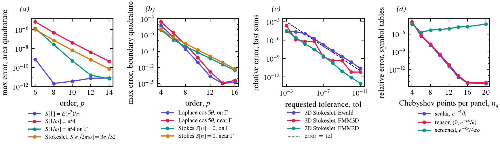
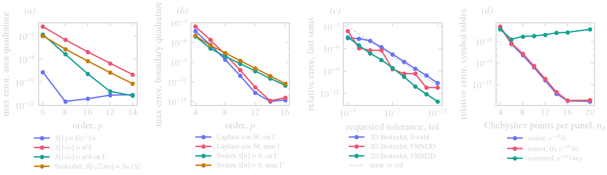

Method overview
Every potential in OpenSurfaces is computed the same way. With nodes $y_j$ and weights $w_j$ of the mesh, the plain quadrature rule
\[u(x_i) \approx \sum_{j} K(x_i - y_j)\, w_j\, \tilde\mu_j\]
is accurate wherever the kernel is smooth on the scale of the panels; near a target it is not, since $K$ is singular at $r = 0$. So the plain rule is summed over all pairs by a fast method (coincident pairs skipped), and a sparse correction $C$ replaces it, for each target, on the few panels near it by weights that integrate the singularity:
\[u = \underbrace{\textstyle\sum_{j \ne i} K(x_i - y_j)\, w_j\, \tilde\mu_j}_{\text{fast sum}} + (C\tilde\mu)_i, \qquad C = (\text{accurate weights}) - (\text{plain weights}) \ \text{on the near panels}.\]
Evaluator holds the pieces: the fast sum, chosen by the kernel's type; the corrections, built once; the bookkeeping of targets and density forms. Each piece has its own page:
- Geometry: boundary panels from a parametrization, and the area mesh with its graded edge layer, where a density's $d^{-1/2}$ edge singularity goes into the weights.
- Quadrature: the local corrections, for area sources (polar rules for targets on a panel, adaptive subdivision for targets near it) and line sources (log product rules on $\Gamma$, adaptive near it).
- Fast sums: FMM2D and FMM3D with their normalizations and coincident points, Ewald splitting with NUFFTs, and smooth convolutions.
- Kernels from Fourier symbols: a standard kernel plus a remainder tabulated by Hankel transforms, and where the remainder goes in each of the above.
Limits lists what the method does not do, and where it needs care.
Validation


(a) Area quadrature on the unit disc (16 boundary panels at every p, tol 1e-10), the largest error against closed forms: $S[1] = E(r^2)/\pi$ reaches about 1e-11 (the level of the fast sum) by p = 8; $S[1/\omega] = \pi/4$ with the edge-singular stored density falls from 6.7e-6 to 4.6e-10 at the area nodes and from 1.4e-6 to 6.6e-12 on $\Gamma$, and the Stokeslet identity $S[e_x/2\pi\omega] = (3/32)\,e_x$ ($\mu_{3D} = 2$) from 1.0e-6 to 7.4e-11, for p = 6 to 14. (b) Boundary quadrature at tol 1e-12, on $\Gamma$ and at targets down to 1e-8 from it: the 2D Laplace single layer of $\cos 5\theta$ on the unit circle against $-r^5\cos 5\theta/10$ reaches about 1e-15 by p = 14; the 2D Stokes identity $S[n] = 0$ on a five-armed star falls from 1.2e-5 to 5.6e-13 for p = 4 to 16. (c) Fast sums against direct sums on the 13,900 nodes of an ellipse mesh, against the requested tol (dashed: error = tol): FMM3D and FMM2D stay at or below tol; the Ewald sum is within 1.1–2.7 × tol for tol ≤ 1e-5 and levels off near 3e-5 at looser tol. (d) Tables of SymbolKernel remainders against closed forms, by Chebyshev points per panel $n_q$: an exponentially decaying pair, scalar and tensor, converges spectrally to 5e-15 at $n_q = 16$; the screened kernel $e^{-\kappa\rho}/4\pi\rho$, whose remainder decays only algebraically in $k$, levels off at 2e-6 to 5e-5, an error concentrated at $\rho \to 0$ (Limits).
The tests (test/) check these at the production settings against exact or direct references; the opt-in validation tier (test/validation/run_all.jl) runs the convergence sweeps behind them.